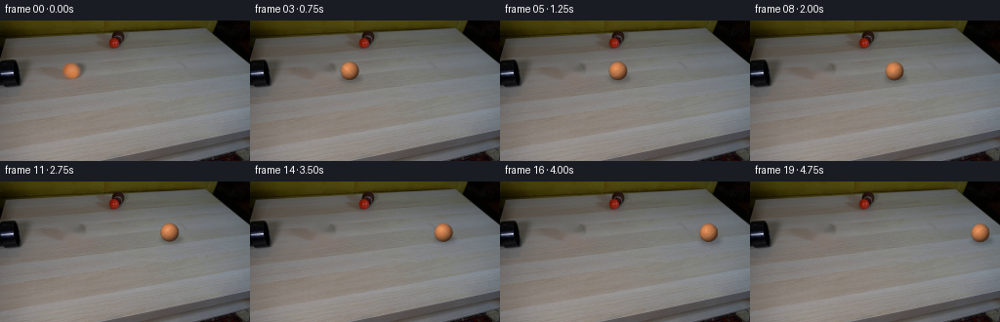
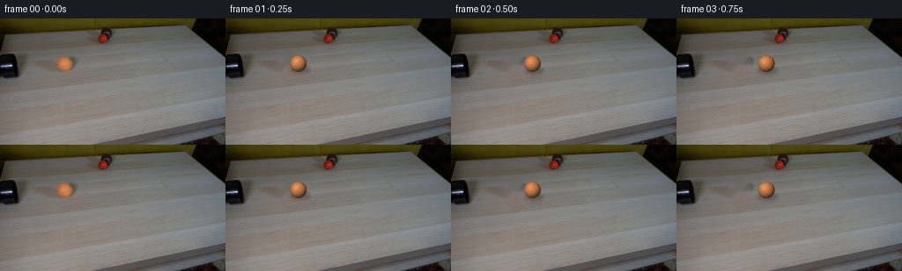
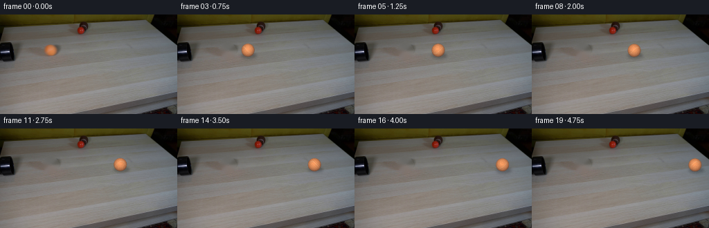
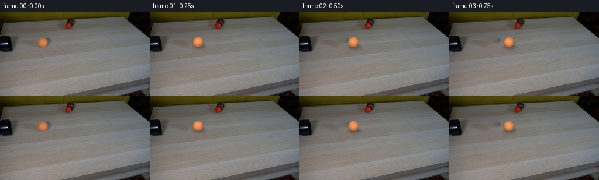

CODING AGENTS AS PIXEL WORLD MODELS
traex/DeepSeek-V4.1-Flash · 0010
点击播放 · 原生 RGB 像素
逐轮保存的候选
回放视频、检查图与代码变化。
每份候选均可单独播放。实际图片检查记录在下方工具轨迹中。
候选 01播放与检查图
点击播放 · 原生 RGB 像素


展开代码变化
--- 上一保存版本
+++ 本次保存版本
@@ -0,0 +1,164 @@
+from pathlib import Path
+
+import cv2
+import numpy as np
+from PIL import Image
+
+import artifact_io
+
+
+WIDTH = 256
+HEIGHT = 144
+N_FRAMES = 20
+FPS = 4
+
+
+def smoothstep(edge0, edge1, value):
+ t = np.clip((value - edge0) / (edge1 - edge0), 0.0, 1.0)
+ return t * t * (3.0 - 2.0 * t)
+
+
+def make_clean_plate(frame):
+ """Remove the foreground ball while preserving the tabletop around it."""
+ mask = np.zeros((HEIGHT, WIDTH), dtype=np.uint8)
+ cv2.ellipse(mask, (73, 52), (12, 11), 0, 0, 360, 255, -1)
+
+ bgr = frame[:, :, ::-1]
+ clean_bgr = cv2.inpaint(bgr, mask, 4, cv2.INPAINT_TELEA)
+ clean = clean_bgr[:, :, ::-1].astype(np.float32)
+
+ # Very light low-frequency cleanup in the filled disk prevents any
+ # inpainting streaks from becoming visible as the ball moves away.
+ blurred = cv2.GaussianBlur(clean, (0, 0), 1.2)
+ soft_mask = cv2.GaussianBlur(mask.astype(np.float32) / 255.0, (0, 0), 1.2)
+ clean = clean * (1.0 - 0.18 * soft_mask[..., None]) + blurred * (
+ 0.18 * soft_mask[..., None]
+ )
+ return np.clip(clean, 0, 255)
+
+
+def add_contact_shadow(frame, cx, cy, radius):
+ shadow = np.zeros((HEIGHT, WIDTH), dtype=np.float32)
+ center = (int(round(cx + 1.0)), int(round(cy + radius * 0.72)))
+ axes = (max(7, int(round(radius * 1.18))), max(3, int(round(radius * 0.42))))
+ cv2.ellipse(shadow, center, axes, 0, 0, 360, 1.0, -1)
+ shadow = cv2.GaussianBlur(shadow, (0, 0), 2.0)
+ shadow = np.clip(shadow, 0.0, 1.0)
+ return frame * (1.0 - 0.24 * shadow[..., None])
+
+
+def render_ball(frame, cx, cy, radius, roll_angle):
+ """Render a softly lit fuzzy tennis ball with a rotating seam."""
+ pad = 4
+ x0 = max(0, int(np.floor(cx - radius - pad)))
+ x1 = min(WIDTH, int(np.ceil(cx + radius + pad)) + 1)
+ y0 = max(0, int(np.floor(cy - radius - pad)))
+ y1 = min(HEIGHT, int(np.ceil(cy + radius + pad)) + 1)
+
+ yy, xx = np.mgrid[y0:y1, x0:x1].astype(np.float32)
+ nx = (xx + 0.5 - cx) / radius
+ ny = (yy + 0.5 - cy) / radius
+ rr2 = nx * nx + ny * ny
+ rr = np.sqrt(rr2)
+
+ # Antialiased spherical silhouette.
+ coverage = 1.0 - smoothstep(0.94, 1.03, rr)
+ inside = rr < 1.04
+ nz = np.sqrt(np.clip(1.0 - rr2, 0.0, 1.0))
+
+ # Fixed upper-left key light. Surface texture rotates about the vertical
+ # axis, matching a ball rolling from left to right.
+ light = np.array([-0.34, -0.42, 0.84], dtype=np.float32)
+ light /= np.linalg.norm(light)
+ diffuse = np.clip(nx * light[0] + ny * light[1] + nz * light[2], 0.0, 1.0)
+ shade = 0.34 + 0.71 * diffuse
+ shade *= 0.74 + 0.26 * np.power(np.clip(nz, 0.0, 1.0), 0.55)
+
+ # A broad soft highlight, plus tiny fuzzy color variation.
+ hx, hy, hz = nx + 0.24, ny + 0.27, nz - 0.93
+ highlight = np.exp(-(hx * hx + hy * hy + hz * hz) / 0.075)
+ shade += 0.075 * highlight
+
+ ca, sa = np.cos(roll_angle), np.sin(roll_angle)
+ px = ca * nx + sa * nz
+ pz = -sa * nx + ca * nz
+ py = ny
+
+ lon = np.arctan2(pz, px)
+ seam_distance = np.abs(py - 0.50 * np.sin(2.0 * lon))
+ seam = 1.0 - smoothstep(0.035, 0.075, seam_distance)
+ seam *= smoothstep(0.10, 0.45, nz)
+
+ grain = (
+ 0.020 * np.sin(41.0 * px + 17.0 * py + 13.0 * pz)
+ + 0.014 * np.sin(67.0 * px - 31.0 * py + 29.0 * pz)
+ + 0.010 * np.sin(97.0 * px + 71.0 * py - 19.0 * pz)
+ )
+ grain *= smoothstep(0.05, 0.45, nz)
+
+ albedo = np.empty((*nx.shape, 3), dtype=np.float32)
+ albedo[..., 0] = 211.0
+ albedo[..., 1] = 133.0
+ albedo[..., 2] = 83.0
+ albedo *= (1.0 + grain[..., None])
+
+ seam_color = np.array([220.0, 181.0, 139.0], dtype=np.float32)
+ albedo = albedo * (1.0 - 0.34 * seam[..., None]) + seam_color * (
+ 0.34 * seam[..., None]
+ )
+ color = albedo * shade[..., None]
+
+ # Fade the very edge toward the local tabletop color so the tiny ball
+ # sits in the plate without a hard cutout border.
+ edge_mix = smoothstep(0.82, 1.02, rr)[..., None]
+ local_background = frame[y0:y1, x0:x1]
+ color = color * (1.0 - 0.30 * edge_mix) + local_background * (
+ 0.30 * edge_mix
+ )
+
+ alpha = (coverage * inside.astype(np.float32))[..., None]
+ target = frame[y0:y1, x0:x1]
+ rendered = target * (1.0 - alpha) + color * alpha
+ frame[y0:y1, x0:x1] = rendered
+
+
+def ball_position(t):
+ duration = (N_FRAMES - 1) / FPS
+ start_x = 72.8
+ initial_speed = 40.0
+ deceleration = 2.39
+ displacement = initial_speed * t - 0.5 * deceleration * t * t
+ x = start_x + displacement
+ y = 51.4 + 1.35 * (t / duration)
+ return x, y, displacement
+
+
+def generate():
+ root = Path(__file__).resolve().parent
+ original = np.asarray(
+ Image.open(root / "first_frame.png").convert("RGB"), dtype=np.uint8
+ )
+ if original.shape != (HEIGHT, WIDTH, 3):
+ raise ValueError(f"Unexpected first-frame shape: {original.shape}")
+
+ clean_plate = make_clean_plate(original)
+ frames = np.empty((N_FRAMES, HEIGHT, WIDTH, 3), dtype=np.uint8)
+ radius = 9.7
+
+ for index in range(N_FRAMES):
+ if index == 0:
+ frames[index] = original
+ continue
+
+ t = index / FPS
+ cx, cy, distance = ball_position(t)
+ frame = add_contact_shadow(clean_plate.copy(), cx, cy, radius)
+ roll_angle = -distance / radius
+ render_ball(frame, cx, cy, radius, roll_angle)
+ frames[index] = np.clip(np.rint(frame), 0, 255).astype(np.uint8)
+
+ artifact_io.save(frames, root)
+
+
+if __name__ == "__main__":
+ generate()
候选 02播放与检查图
点击播放 · 原生 RGB 像素

展开代码变化
--- 上一保存版本
+++ 本次保存版本
@@ -66,18 +66,18 @@
inside = rr < 1.04
nz = np.sqrt(np.clip(1.0 - rr2, 0.0, 1.0))
- # Fixed upper-left key light. Surface texture rotates about the vertical
- # axis, matching a ball rolling from left to right.
- light = np.array([-0.34, -0.42, 0.84], dtype=np.float32)
+ # The source is softly top-lit, so keep the key close to the camera axis.
+ # Surface texture rotates about the vertical axis as the ball rolls.
+ light = np.array([-0.08, -0.25, 0.965], dtype=np.float32)
light /= np.linalg.norm(light)
diffuse = np.clip(nx * light[0] + ny * light[1] + nz * light[2], 0.0, 1.0)
- shade = 0.34 + 0.71 * diffuse
- shade *= 0.74 + 0.26 * np.power(np.clip(nz, 0.0, 1.0), 0.55)
+ shade = 0.56 + 0.54 * diffuse
+ shade *= 0.76 + 0.24 * np.power(np.clip(nz, 0.0, 1.0), 0.55)
# A broad soft highlight, plus tiny fuzzy color variation.
- hx, hy, hz = nx + 0.24, ny + 0.27, nz - 0.93
- highlight = np.exp(-(hx * hx + hy * hy + hz * hz) / 0.075)
- shade += 0.075 * highlight
+ hx, hy, hz = nx + 0.10, ny + 0.18, nz - 0.98
+ highlight = np.exp(-(hx * hx + hy * hy + hz * hz) / 0.11)
+ shade += 0.045 * highlight
ca, sa = np.cos(roll_angle), np.sin(roll_angle)
px = ca * nx + sa * nz
@@ -97,9 +97,9 @@
grain *= smoothstep(0.05, 0.45, nz)
albedo = np.empty((*nx.shape, 3), dtype=np.float32)
- albedo[..., 0] = 211.0
- albedo[..., 1] = 133.0
- albedo[..., 2] = 83.0
+ albedo[..., 0] = 221.0
+ albedo[..., 1] = 140.0
+ albedo[..., 2] = 88.0
albedo *= (1.0 + grain[..., None])
seam_color = np.array([220.0, 181.0, 139.0], dtype=np.float32)
@@ -107,13 +107,14 @@
0.34 * seam[..., None]
)
color = albedo * shade[..., None]
+ color[..., 2] += 7.0 * (1.0 - diffuse) * (1.0 - 0.6 * seam)
# Fade the very edge toward the local tabletop color so the tiny ball
# sits in the plate without a hard cutout border.
- edge_mix = smoothstep(0.82, 1.02, rr)[..., None]
+ edge_mix = smoothstep(0.87, 1.025, rr)[..., None]
local_background = frame[y0:y1, x0:x1]
- color = color * (1.0 - 0.30 * edge_mix) + local_background * (
- 0.30 * edge_mix
+ color = color * (1.0 - 0.22 * edge_mix) + local_background * (
+ 0.22 * edge_mix
)
alpha = (coverage * inside.astype(np.float32))[..., None]
候选 03播放与检查图
点击播放 · 原生 RGB 像素


展开代码变化
--- 上一保存版本
+++ 本次保存版本
@@ -97,9 +97,9 @@
grain *= smoothstep(0.05, 0.45, nz)
albedo = np.empty((*nx.shape, 3), dtype=np.float32)
- albedo[..., 0] = 221.0
- albedo[..., 1] = 140.0
- albedo[..., 2] = 88.0
+ albedo[..., 0] = 199.0
+ albedo[..., 1] = 126.0
+ albedo[..., 2] = 79.0
albedo *= (1.0 + grain[..., None])
seam_color = np.array([220.0, 181.0, 139.0], dtype=np.float32)
候选 04播放与检查图
可观测工具轨迹
实际执行的命令与返回图片。
命令 1exit 0
/bin/bash -c "pwd && rg --files -g '"'!*.mp4'"' -g '"'!*.mov'"' -g '"'!*.webm'"' | sort"
命令 2exit 0
/bin/bash -c "sed -n '1,240p' prompt.txt"
命令 3exit 0
/bin/bash -c "sed -n '1,280p' GENERATION_RULES.md"
命令 4exit 0
/bin/bash -c 'file first_frame.png && identify first_frame.png 2>/dev/null || true && ls -lah'
命令 5exit 0
/bin/bash -c "sed -n '1,260p' artifact_io.py"
命令 6exit 0
/bin/bash -c "python - <<'PY' import importlib.util for m in ['numpy','PIL','cv2','scipy','skimage','imageio','matplotlib']: print(m, bool(importlib.util.find_spec(m))) PY"
命令 7exit 0
/bin/bash -c "python - <<'PY'
from PIL import Image
import numpy as np
im=Image.open('first_frame.png')
print(im.mode, im.size)
a=np.asarray(im.convert('RGB'))
print(a.shape,a.dtype,'minmax',a.min((0,1)),a.max((0,1)),'mean',a.mean((0,1)))
# 16x9 block mean map, coarse RGB
h,w,_=a.shape
for y in range(0,h,16):
row=[]
for x in range(0,w,16):
c=a[y:y+16,x:x+16].mean((0,1)).astype(int)
row.append('%02x%02x%02x'%tuple(c))
print(y,' '.join(row))
PY"命令 8exit 0
/bin/bash -c "python - <<'PY'
import cv2, numpy as np
from PIL import Image
im=cv2.imread('first_frame.png')
g=cv2.cvtColor(im,cv2.COLOR_BGR2GRAY)
# edge map block max Sobel
s=cv2.Sobel(g,cv2.CV_32F,1,0,ksize=3); t=cv2.Sobel(g,cv2.CV_32F,0,1,ksize=3)
e=np.sqrt(s*s+t*t)
chars=' .:-=+*#%@'
for y in range(0,144,4):
line=''
for x in range(0,256,4):
v=e[y:y+4,x:x+4].max()
line += chars[min(9,int(v/100))]
print(f'{y:3} '+line)
PY"命令 9exit 0
/bin/bash -c "python - <<'PY'
import cv2, numpy as np
im=cv2.imread('first_frame.png'); hsv=cv2.cvtColor(im,cv2.COLOR_BGR2HSV)
# print connected comps for likely vivid object masks (sat>80, V>30), and dark mask
masks={
'red': ((hsv[:,:,0]<10)|(hsv[:,:,0]>170))&(hsv[:,:,1]>100)&(hsv[:,:,2]>50),
'orange_brown': (hsv[:,:,0]>=5)&(hsv[:,:,0]<28)&(hsv[:,:,1]>65)&(hsv[:,:,2]>35),
'dark': (hsv[:,:,2]<55),
'blueish': (hsv[:,:,0]>85)&(hsv[:,:,0]<135)&(hsv[:,:,1]>45),
}
for name,m in masks.items():
n,labels,stats,cent=cv2.connectedComponentsWithStats(m.astype('uint8'),8)
print('\\n',name,'total',m.sum())
for i in np.argsort(stats[1:,4])[::-1][:15]+1:
x,y,w,h,a=stats[i]
if a>=5: print(' ',a,(x,y,w,h),'center',tuple(np.round(cent[i],1)))
PY"命令 10exit 0
/bin/bash -c "python - <<'PY'
import cv2, numpy as np
im=cv2.imread('first_frame.png'); rgb=im[:,:,::-1]
# kmeans colors in RGB, weighted, 20 clusters
x=rgb.reshape(-1,3).astype(np.float32)
crit=(cv2.TERM_CRITERIA_EPS+cv2.TERM_CRITERIA_MAX_ITER,100,.2)
_,lab,cent=cv2.kmeans(x,24,None,crit,10,cv2.KMEANS_PP_CENTERS)
cent=cent.round().astype(int); cnt=np.bincount(lab.ravel(),minlength=24)
for i in np.argsort(cnt)[::-1]:
print(f'{cnt[i]:6d} {cnt[i]/len(x)*100:5.2f}% rgb{tuple(cent[i])}')
PY"命令 11exit 0
/bin/bash -c "python - <<'PY'
from PIL import Image
import numpy as np
im=np.asarray(Image.open('first_frame.png').convert('RGB'))
# print crops enlarged nearest to tmp
for name,box in [('left',(0,0,100,80)),('pipeball',(45,35,115,80)),('redball',(90,5,145,40)),('table',(0,70,256,144))]:
c=Image.fromarray(im[box[1]:box[3],box[0]:box[2]])
c.resize((c.width*5,c.height*5),Image.Resampling.NEAREST).save('.tmp/'+name+'.png')
# ascii luma at 2px blocks in key area
lum=im.mean(2)
chars='@%#*+=-:. '
for y in range(0,80,2):
line=''
for x in range(0,130,2):
v=lum[y:y+2,x:x+2].mean()
line+=chars[min(len(chars)-1,int(v/256*len(chars)))]
print(f'{y:02} {line}')
PY"命令 12exit 0
/bin/bash -c "python - <<'PY'
import cv2, numpy as np
im=cv2.imread('first_frame.png'); hsv=cv2.cvtColor(im,cv2.COLOR_BGR2HSV); rgb=im[:,:,::-1]
# 4x4 modal color classes
for y in range(28,84,4):
line=''
for x in range(0,140,4):
patch=hsv[y:y+4,x:x+4].reshape(-1,3); p=rgb[y:y+4,x:x+4].reshape(-1,3)
h,s,v=patch.mean(0); r,g,b=p.mean(0)
if v<45: c='K'
elif s<20 and v<90: c='d'
elif h<8 or h>175:
c='R' if s>80 else ('o' if s>30 else 'w')
elif h<35:
c='O' if s>80 and v>50 else ('b' if s>50 else 'w')
elif h<80: c='Y' if s>70 else 'w'
elif h<150: c='B' if s>60 else 'c'
else: c='m'
line+=c
print(f'{y:03} {line}')
# RGB samples in suspect regions every 4
print('\\nRGB grid x0..128 y36..76 (hex)')
for y in range(36,77,4):
print(f'{y:03}', ' '.join('%02x%02x%02x'%tuple(rgb[y,x]) for x in range(0,129,8)))
PY"命令 13exit 0
/bin/bash -c "python - <<'PY'
from PIL import Image
import numpy as np
im=np.asarray(Image.open('first_frame.png').convert('RGB'))
# stats for manually interpreted surfaces
regions={
'backwall':(30,0,220,32),'wall_left':(25,20,60,38),'wood_top':(20,60,200,110),'front_wood':(30,110,220,136),
'pipe_dark':(0,38,20,68),'pipe_ball':(58,42,88,70),'ball_obj':(100,10,132,36),
'red_obj':(108,14,126,32),'right_dark':(218,0,256,48),'bottomdark':(210,136,256,144)
}
for n,(x1,y1,x2,y2) in regions.items():
p=im[y1:y2,x1:x2].reshape(-1,3)
print(n,'mean',p.mean(0).round(1),'med',np.median(p,0),'q10',np.quantile(p,.1,axis=0).round(1),'q90',np.quantile(p,.9,axis=0).round(1))
# row/col mean colors
for y in [0,8,16,24,32,40,48,56,64,72,80,88,96,104,112,120,128,136,143]: print('row',y,im[y].mean(0).round(1))
PY"命令 14exit 0
/bin/bash -c "python - <<'PY'
import cv2,numpy as np
im=cv2.imread('first_frame.png'); rgb=im[:,:,::-1]
hsv=cv2.cvtColor(im,cv2.COLOR_BGR2HSV)
# print all connected comps for thresholds, with median RGB and bbox
for nm,m in [
('dark',hsv[:,:,2]<70),
('verydark',hsv[:,:,2]<35),
('sat',hsv[:,:,1]>50),
('orange',(hsv[:,:,0]<35)&(hsv[:,:,1]>50)&(hsv[:,:,2]>30)),
('red',((hsv[:,:,0]<10)|(hsv[:,:,0]>170))&(hsv[:,:,1]>70)&(hsv[:,:,2]>30)),
('brown',(hsv[:,:,0]<35)&(hsv[:,:,1]>30)&(hsv[:,:,2]>20)),
('blue',(hsv[:,:,0]>85)&(hsv[:,:,0]<145)&(hsv[:,:,1]>30)),
]:
n,l,st,c=cv2.connectedComponentsWithStats(m.astype('uint8'),8)
print('\\n'+nm)
for i in range(1,n):
x,y,w,h,a=st[i]
if a<15: continue
p=rgb[l==i]
print(f'area {a:4} bbox {x:3},{y:3},{w:3},{h:3} med {tuple(np.median(p,0).astype(int))} mean {tuple(p.mean(0).round().astype(int))}')
PY"命令 15exit 1
/bin/bash -c "python - <<'PY'
from PIL import Image
import numpy as np
im=np.asarray(Image.open('first_frame.png').convert('RGB'))
# print all pixels as categorical 2px blocks around x0..160 y0..100, palette classes using nearest anchors
anchors=np.array([
[3,3,3],[8,8,10],[24,19,2],[65,57,9],[92,88,84],[125,120,114],[145,140,135],[165,110,77],[190,125,85],[110,35,20],[55,55,55],[80,85,95],[115,125,135],[170,165,160],[200,200,200],[30,30,30]
])
chars='KkYydefFOBRUGWw'
for y in range(0,104,2):
line=''
for x in range(0,168,2):
p=im[y:y+2,x:x+2].reshape(-1,3).mean(0)
i=((anchors-p)**2).sum(1).argmin()
line+=chars[i]
print(f'{y:03} {line}')
print('anchors',list(zip(chars,anchors.tolist())))
PY"命令 16exit 1
/bin/bash -c "python - <<'PY'
from PIL import Image
import numpy as np
im=np.asarray(Image.open('first_frame.png').convert('RGB'))
anchors=np.array([[3,3,3],[8,8,10],[24,19,2],[65,57,9],[92,88,84],[125,120,114],[145,140,135],[165,110,77],[190,125,85],[110,35,20],[55,55,55],[80,85,95],[115,125,135],[170,165,160],[200,200,200],[30,30,30]])
chars='KkYydefFOBRUGWw'
for y in range(0,104,2):
line=''
for x in range(0,168,2):
p=im[y:y+2,x:x+2].reshape(-1,3).mean(0)
i=((anchors-p)**2).sum(1).argmin()
line+=chars[i]
print(f'{y:03} {line}')
PY"命令 17exit 0
/bin/bash -c "python - <<'PY'
from PIL import Image
import numpy as np
im=np.asarray(Image.open('first_frame.png').convert('RGB'))
anchors=np.array([[3,3,3],[8,8,10],[24,19,2],[65,57,9],[92,88,84],[125,120,114],[145,140,135],[165,110,77],[190,125,85],[110,35,20],[55,55,55],[80,85,95],[115,125,135],[170,165,160],[200,200,200],[30,30,30]])
chars='KkYydefFOBRUGWwX'
for y in range(0,104,2):
line=''
for x in range(0,168,2):
p=im[y:y+2,x:x+2].reshape(-1,3).mean(0)
i=int(((anchors-p)**2).sum(1).argmin())
line+=chars[i]
print(f'{y:03} {line}')
PY"命令 18exit 0
/bin/bash -c "python - <<'PY'
from PIL import Image
import numpy as np
im=np.asarray(Image.open('first_frame.png').convert('RGB'))
# Print exact color values for key coordinates and contiguous runs on rows
for y in [10,15,20,25,30,35,40,43,45,48,50,52,55,58,60,64,68]:
runs=[]; row=im[y]
last=tuple(row[0]); start=0
for x in range(1,256):
c=tuple(row[x])
# coarse class
if x==255:
runs.append((start,255,last)); break
if np.abs(np.array(c)-np.array(last)).max()>18:
runs.append((start,x-1,last)); start=x
last=c
print('y',y)
print(' '.join(f'{a}-{b}:{c}' for a,b,c in runs if b-a>=1))
PY"命令 19exit 0
/bin/bash -c "python - <<'PY'
from PIL import Image
import numpy as np
im=np.asarray(Image.open('first_frame.png').convert('RGB'))
# crop summary via average 8x8 tiles x0-136 y28-76
for y in range(28,76,4):
print(f'{y:03}',end=' ')
for x in range(0,136,4):
p=im[y:y+4,x:x+4].mean((0,1)).astype(int)
print('%02x%02x%02x'%tuple(p),end=' ')
print()
PY"命令 20exit 0
/bin/bash -c "python - <<'PY'
from PIL import Image
import numpy as np
im=np.asarray(Image.open('first_frame.png').convert('RGB'))
# detailed crop region x54..92,y38..68 exact color plus luma categories
for y in range(38,69):
s=''
for x in range(54,92):
r,g,b=im[y,x]
if max(r,g,b)<15:c='@'
elif r-g>60:c='O'
elif r-g>25 and g-b>10:c='o'
elif max(r,g,b)<55:c='#'
elif max(r,g,b)<85:c='%'
elif max(r,g,b)<110:c='*'
elif max(r,g,b)<130:c='+'
elif max(r,g,b)<150:c='-'
else:c='.'
s+=c
print(f'{y:03} {s}')
PY"命令 21exit 0
/bin/bash -c "python - <<'PY'
from PIL import Image
import numpy as np
im=np.asarray(Image.open('first_frame.png').convert('RGB')).astype(int)
# color difference in local crop, print masks: saturated orange, red, dark
for y in range(35,70):
s=''
for x in range(0,150):
r,g,b=im[y,x]
if r-g>35 and r-b>45:
if r>150:s='O'
elif r>110:s='o'
else:s='r'
elif max(r,g,b)<20:s='@'
elif max(r,g,b)<60:s='#'
elif max(r,g,b)<95:s='%'
elif max(r,g,b)<120:s='*'
elif max(r,g,b)<140:s='+'
else:s='.'
# compress every 1 but only output selected chars
s+=s[-1]
print(f'{y:03} {s}')
PY"命令 22exit 0
/bin/bash -c "python - <<'PY'
from PIL import Image
import numpy as np
im=np.asarray(Image.open('first_frame.png').convert('RGB')).astype(int)
for y in range(35,70):
s=''
for x in range(0,150):
r,g,b=im[y,x]
if r-g>35 and r-b>45:
if r>150:s+='O'
elif r>110:s+='o'
else:s+='r'
elif max(r,g,b)<20:s+='@'
elif max(r,g,b)<60:s+='#'
elif max(r,g,b)<95:s+='%'
elif max(r,g,b)<120:s+='*'
elif max(r,g,b)<140:s+='+'
else:s+='.'
print(f'{y:03} {s}')
PY"命令 23exit 0
/bin/bash -c "python - <<'PY'
import cv2, numpy as np
im=cv2.imread('first_frame.png')
g=cv2.cvtColor(im,cv2.COLOR_BGR2GRAY)
e=cv2.Canny(g,30,100)
lines=cv2.HoughLinesP(e,1,np.pi/180,threshold=18,minLineLength=25,maxLineGap=8)
if lines is not None:
for x1,y1,x2,y2 in sorted(lines[:,0],key=lambda q:-((q[2]-q[0])**2+(q[3]-q[1])**2))[:80]:
length=((x2-x1)**2+(y2-y1)**2)**.5
angle=np.degrees(np.arctan2(y2-y1,x2-x1))
print(f'len {length:5.1f} angle {angle:6.1f} ({x1},{y1})->({x2},{y2})')
PY"命令 24exit 0
/bin/bash -c "python - <<'PY'
import cv2, numpy as np
im=cv2.imread('first_frame.png'); hsv=cv2.cvtColor(im,cv2.COLOR_BGR2HSV); rgb=im[:,:,::-1]
# stats on likely table excluding dark foreground x20..200 y70..110
for name,(x1,y1,x2,y2) in {'top':(20,70,200,90),'mid':(20,90,200,110),'front':(20,110,200,132),'left':(20,70,50,110),'right':(180,70,220,110)}.items():
p=rgb[y1:y2,x1:x2].reshape(-1,3)
print(name,'mean',p.mean(0).round(1),'std',p.std(0).round(1))
# median filtered then residual edges, map
med=cv2.medianBlur(im,5); diff=np.abs(med.astype(int)-im.astype(int)).max(2)
print('max diff quantiles',np.quantile(diff,[.5,.8,.9,.95,.99]))
# lines on smoothed edges in table
crop=im[65:144,15:220]
g=cv2.cvtColor(crop,cv2.COLOR_BGR2GRAY)
g=cv2.GaussianBlur(g,(3,3),0)
e=cv2.Canny(g,10,30)
for y in range(0,79,2):
s=''
for x in range(0,205,2): s+='#' if e[y:y+2,x:x+2].any() else ' '
print(f'{y+65:03} {s}')
PY"命令 25exit 0
/bin/bash -c "python - <<'PY'
from PIL import Image
import numpy as np
im=np.asarray(Image.open('first_frame.png').convert('RGB')).astype(np.int16)
# row differences, mean absolute, around scene
for y in range(0,144):
d=np.abs(np.diff(im[y],axis=0)).mean()
if d>8: print('row',y,'diff',round(float(d),2))
print('col')
for x in range(256):
d=np.abs(np.diff(im[:,x],axis=0)).mean()
if d>8: print('col',x,'diff',round(float(d),2))
PY"命令 26exit 0
/bin/bash -c "python - <<'PY'
from PIL import Image
import numpy as np
im=np.asarray(Image.open('first_frame.png').convert('RGB')).astype(np.int16)
print('row d')
vals=[]
for y in range(1,144):
d=np.abs(im[y]-im[y-1]).mean(); vals.append((d,y))
for d,y in sorted(vals,reverse=True)[:30]: print(y,round(float(d),3))
print('col d')
vals=[]
for x in range(1,256):
d=np.abs(im[:,x]-im[:,x-1]).mean(); vals.append((d,x))
for d,x in sorted(vals,reverse=True)[:30]: print(x,round(float(d),3))
PY"命令 27exit 0
/bin/bash -c "python - <<'PY'
import cv2, numpy as np
im=cv2.imread('first_frame.png')
# inspect candidates via threshold crops created in tmp
rgb=im[:,:,::-1]
hsv=cv2.cvtColor(im,cv2.COLOR_BGR2HSV)
# red ball bounding box likely 109..127,10..31; output zoom with threshold overlay
crop=im[4:40,100:136]
cv2.imwrite('.tmp/red_crop.png',cv2.resize(crop,None,fx=10,fy=10,interpolation=cv2.INTER_NEAREST))
# binary masks inspect pixel count rows
for y in range(8,34):
print(f'{y:02}', ''.join('#' if ((hsv[y,x,0]<10 or hsv[y,x,0]>170) and hsv[y,x,1]>70) else ('O' if hsv[y,x,0]<30 and hsv[y,x,1]>70 else ('.' if hsv[y,x,2]>60 else ' ')) for x in range(100,137)))
PY"命令 28exit 0
/bin/bash -c "python - <<'PY'
import cv2,numpy as np
im=cv2.imread('first_frame.png'); hsv=cv2.cvtColor(im,cv2.COLOR_BGR2HSV)
for nm,m in [('red',((hsv[:,:,0]<12)|(hsv[:,:,0]>170))&(hsv[:,:,1]>100)&(hsv[:,:,2]>40)),('pipe_ball',(hsv[:,:,0]<35)&(hsv[:,:,1]>60)&(hsv[:,:,2]>60))]:
ys,xs=np.where(m)
print(nm,'centroid',xs.mean(),ys.mean(),'q',np.quantile(xs,[0,.1,.5,.9,1]),np.quantile(ys,[0,.1,.5,.9,1]))
# fit ellipse around largest relevant comp
PY"命令 29exit 0
/bin/bash -c "python - <<'PY'
from PIL import Image
import numpy as np
im=np.asarray(Image.open('first_frame.png').convert('RGB'))
# RGB at ball crop rows 43-61 cols 62-84 every 2 px
for y in range(42,62,2):
print('y',y, ' '.join('%02x%02x%02x'%tuple(im[y,x]) for x in range(62,85,2)))
# exact center/bounds of bright orange threshold comp
import cv2
hsv=cv2.cvtColor(im[:,:,::-1],cv2.COLOR_BGR2HSV)
m=((hsv[:,:,0]<30)&(hsv[:,:,1]>70)&(hsv[:,:,2]>100)).astype('uint8')
n,l,st,c=cv2.connectedComponentsWithStats(m,8)
for i in range(1,n):
x,y,w,h,a=st[i]
if a>20: print('comp',a,(x,y,w,h),c[i])
PY"命令 30exit 0
/bin/bash -c "python - <<'PY'
import cv2, numpy as np
im=cv2.imread('first_frame.png')
g=cv2.cvtColor(im,cv2.COLOR_BGR2GRAY)
# local intensity and gradient direction around ball/pipe, using 2x2 blocks
print('luma / sobel direction grid x40..100 y34..68')
for y in range(34,70,2):
s=''
for x in range(40,102,2):
p=im[y:y+2,x:x+2]
l=int(p.mean())
# letter based on luma and color
b,gc,r=p.mean((0,1))
if r-gc>25 and r-b>35: c='O' if l>100 else 'o'
elif l<20:c='@'
elif l<50:c='#'
elif l<75:c='%'
elif l<100:c='*'
elif l<120:c='+'
elif l<140:c='-'
else:c='.'
s+=c
print(f'{y:03} {s}')
PY"命令 31exit 0
/bin/bash -c "python - <<'PY'
import cv2, numpy as np
im=cv2.imread('first_frame.png'); rgb=im[:,:,::-1]
# Analyze texture/noise periodicities: tabletop and wall std local patches; ball
for nm,(x,y,w,h) in {'wall':(30,20,120,15),'table':(25,80,150,25),'pipe':(0,40,20,27),'ball':(64,44,18,16)}.items():
p=rgb[y:y+h,x:x+w].astype(float)
# highpass difference from 3x3 mean
q=cv2.blur(p,(3,3)); print(nm,'local std',p.std((0,1)).round(2),'hp std',(p-q).std((0,1)).round(2))
PY"命令 32exit 0
/bin/bash -c "python - <<'PY'
from PIL import Image
import numpy as np
im=np.asarray(Image.open('first_frame.png').convert('RGB')).astype(int)
# find dark foreground objects in lower right, print luma ascii 1 px per 2 block x180-256,y105-144
chars='@%#*+=-:. '
for y in range(104,144,2):
s=''
for x in range(175,256,2):
p=im[y:y+2,x:x+2].mean((0,1)); l=p.mean()
s+=chars[min(9,int(l/256*10))]
print(f'{y:03} {s}')
# exact likely bbox of connected red/dark bottom
import cv2
hsv=cv2.cvtColor(im.astype('uint8')[:,:,::-1],cv2.COLOR_BGR2HSV)
m=((hsv[:,:,2]<65)).astype('uint8')
n,l,st,c=cv2.connectedComponentsWithStats(m,8)
for i in range(1,n):
x,y,w,h,a=st[i]
if a>20:print(a,(x,y,w,h),c[i])
PY"命令 33exit 0
/bin/bash -c "python - <<'PY'
from PIL import Image
import numpy as np
im=np.asarray(Image.open('first_frame.png').convert('RGB')).astype(int)
# per 4px cell lower area, mean RGB + luma marker
for y in range(104,144,4):
print(f'{y:03}',end=' ')
for x in range(176,256,4):
p=im[y:y+4,x:x+4].mean((0,1)).astype(int)
print('%02x%02x%02x'%tuple(p),end=' ')
print()
PY"命令 34exit 0
/bin/bash -c "python - <<'PY'
from PIL import Image
import numpy as np
im=np.asarray(Image.open('first_frame.png').convert('RGB')).astype(float)
cx,cy=73,51.5
Y,X=np.mgrid[0:144,0:256]; dx=(X-cx)/10;dy=(Y-cy)/10;r=np.sqrt(dx*dx+dy*dy)
m=r<=1
lum=im.mean(2)
print('mean ball',im[m].mean(0),'center',im[int(cy),int(cx)])
for rr in [0,.2,.4,.6,.8,.95]:
mm=(r>=rr-.1)&(r<=rr+.1)
print('r',rr,'rgb',im[mm].mean(0).round(1),'lum',lum[mm].mean().round(1))
# polar 16 bins average luminance and rgb
ang=(np.degrees(np.arctan2(dy,dx))+360)%360
for a in range(0,360,30):
mm=m&(ang>=a)&(ang<a+30)&(r<.8)
print('ang',a,'rgb',im[mm].mean(0).round(1))
PY"命令 35exit 0
/bin/bash -c "python - <<'PY'
from PIL import Image
import numpy as np
im=np.asarray(Image.open('first_frame.png').convert('RGB')).astype(int)
# sample vertical rows to see pipe x0..20, y35..70: print RGB at x 0,5,10,15,20 for y every2
for y in range(36,70,2): print(y,' '.join('%02x%02x%02x'%tuple(im[y,x]) for x in [0,3,6,9,12,15,18,21,24]))
PY"命令 36exit 0
/bin/bash -c "python - <<'PY'
from PIL import Image
import numpy as np
im=np.asarray(Image.open('first_frame.png').convert('RGB')).astype(int)
for y in range(36,72,2):
print(f'{y:03}', ' '.join('%02x%02x%02x'%tuple(im[y,x]) for x in range(18,64,2)))
PY"命令 37exit 0
/bin/bash -c "python - <<'PY'
import cv2,numpy as np
im=cv2.imread('first_frame.png'); g=cv2.cvtColor(im,cv2.COLOR_BGR2GRAY)
# Canny in crop and connected comps
for th in [(10,25),(20,50),(30,80)]:
e=cv2.Canny(g,*th)
n,l,st,c=cv2.connectedComponentsWithStats(e,8)
print('th',th)
for i in range(1,n):
x,y,w,h,a=st[i]
if a>=8: print(a,(x,y,w,h))
PY"命令 38exit 0
/bin/bash -c "python - <<'PY'
from PIL import Image
import numpy as np
im=np.asarray(Image.open('first_frame.png').convert('RGB')).astype(int)
# sample horizontal band through red ball
for y in range(11,31,2):
print(f'{y:02}', ' '.join('%02x%02x%02x'%tuple(im[y,x]) for x in range(105,132,2)))
PY"命令 39exit 0
/bin/bash -c "python - <<'PY'
from PIL import Image
import numpy as np
im=np.asarray(Image.open('first_frame.png').convert('RGB')).astype(int)
# high-level horizontal profile along y=80,90,100,110,120,130 in 8 px averages
for y in [80,90,100,110,120,130,140]:
print('y',y)
for x in range(0,256,16):
p=im[y-2:y+3,x:x+16].mean((0,1)).astype(int)
print(x,tuple(p),end='; ')
print()
PY"命令 40exit 0
/bin/bash -c "python - <<'PY'
from PIL import Image
import numpy as np
im=np.asarray(Image.open('first_frame.png').convert('RGB')).astype(int)
# quantify low frequency field, fit y dependence excluding objects
for y in [10,20,30,40,50,60,70,80,90,100,110,120,130,140]:
# clean x 130..200 except objects
p=im[y,130:200].mean(0)
print(y,tuple(p.round(1)))
PY"命令 41exit 0
/bin/bash -c "python - <<'PY'
from PIL import Image
import numpy as np
im=np.asarray(Image.open('first_frame.png').convert('RGB')).astype(float)
# fit smooth background using cv2 inpainting target objects + pipe? and compare
import cv2
mask=np.zeros((144,256),np.uint8)
# ball and redball
cv2.ellipse(mask,(73,52),(12,11),0,0,360,255,-1)
cv2.ellipse(mask,(116,22),(10,11),0,0,360,255,-1)
# pipe left
mask[39:69,0:22]=255
# foreground right/bottom obstacles maybe leave
# inpainting
bgr=cv2.inpaint(im[:,:,::-1].astype('uint8'),mask,5,cv2.INPAINT_TELEA)
Image.fromarray(bgr[:,:,::-1]).save('.tmp/inpaint.png')
# check ball area smooth predicted colors
for y in [44,48,52,56,60]:
print(y,' '.join('%02x%02x%02x'%tuple(bgr[y,x,::-1]) for x in range(62,85,2)))
PY"命令 42exit 0
/bin/bash -c "python - <<'PY'
from PIL import Image
import numpy as np
im=np.asarray(Image.open('first_frame.png').convert('RGB')).astype(float)
# print colors around perimeter of ball, every coordinate
for y in range(40,64):
row=[]
for x in range(60,86):
p=im[y,x].astype(int)
if p[0]-p[1]>30 and p[0]-p[2]>45: row.append('O')
elif p.mean()<80: row.append('#')
elif p.mean()<110: row.append('*')
elif p.mean()<130: row.append('+')
elif p.mean()<145: row.append('-')
else: row.append('.')
print(f'{y:02}',''.join(row))
PY"命令 43exit 0
/bin/bash -c "python - <<'PY'
import cv2,numpy as np
from PIL import Image
im=cv2.imread('first_frame.png'); rgb=im[:,:,::-1]
# output difference map between image and inpaint to inspect
mask=np.zeros((144,256),np.uint8)
cv2.ellipse(mask,(73,52),(12,10),0,0,360,255,-1)
cv2.ellipse(mask,(116,22),(10,10),0,0,360,255,-1)
mask[39:69,0:21]=255
bgr=cv2.inpaint(im,mask,4,cv2.INPAINT_TELEA)
# make side by side crops scaled
for name,arr in [('orig',rgb),('inp',bgr[:,:,::-1])]:
c=arr[35:75,50:100]
Image.fromarray(c).resize((500,400),Image.Resampling.NEAREST).save('.tmp/'+name+'ballcrop.png')
PY"命令 44exit 0
/bin/bash -c "python - <<'PY'
from PIL import Image
import numpy as np
for n in ['orig','inp']:
a=np.asarray(Image.open('.tmp/'+n+'ballcrop.png'))
print(n,a.shape)
# 50x40 source at 10x scale sample mean 2x2 -> 25x20 ascii
for y in range(0,40,2):
s=''
for x in range(0,50,2):
p=a[y*10+5,x*10+5,:3]; l=p.mean()
if p[0]-p[1]>25:s+='O'
elif l<40:s+='@'
elif l<75:s+='#'
elif l<100:s+='*'
elif l<120:s+='+'
elif l<140:s+='-'
else:s+='.'
print(s)
print()
PY"命令 45exit 0
/bin/bash -c "python - <<'PY'
import cv2,numpy as np
im=cv2.imread('first_frame.png'); g=cv2.cvtColor(im,cv2.COLOR_BGR2GRAY)
# use Harris and print strongest corners
dst=cv2.cornerHarris(np.float32(g),2,3,.04)
for y,x in np.argwhere(dst>dst.max()*.08)[:50]: print(x,y,round(float(dst[y,x]/dst.max()),2))
PY"命令 46exit 0
/bin/bash -c "python - <<'PY'
from PIL import Image
import numpy as np
im=np.asarray(Image.open('first_frame.png').convert('RGB')).astype(float)
# print high-res crop stats as ANSI? better output 50x40 as luma RGB cell using sixel unavailable. use coordinates of table texture peaks
# Compute difference from Gaussian blur and list top points
import cv2
g=cv2.GaussianBlur(im,(0,0),2.0)
d=np.abs(im-g).mean(2)
for y,x in np.dstack(np.unravel_index(np.argsort(d.ravel())[::-1],d.shape))[0][:30]: print(x,y,round(float(d[y,x]),1),tuple(im[y,x].astype(int)))
PY"命令 47exit 0
/bin/bash -c "python - <<'PY'
import cv2,numpy as np
im=cv2.imread('first_frame.png'); rgb=im[:,:,::-1]
# quantify perspective rows via gradient of blurred grayscale
for y in range(60,120):
p=rgb[y].mean(0)
print(y,tuple(p.round().astype(int))) if y in [60,70,80,90,100,110,120] else None
# sample RGB along y=120 around foreground shadows
for y in [108,110,112,114,116,118,120,122,124]:
print('row',y, ' '.join('%02x%02x%02x'%tuple(rgb[y,x]) for x in range(0,256,8)))
PY"命令 48exit 0
/bin/bash -c "python - <<'PY'
from PIL import Image
import numpy as np
im=np.asarray(Image.open('first_frame.png').convert('RGB')).astype(int)
# samples at left for pipe shape
for x in [0,2,5,8,10,12,14,16,18,20,22,24]:
print('x',x,' '.join('%02x%02x%02x'%tuple(im[y,x]) for y in range(35,72,3)))
PY"命令 49exit 0
/bin/bash -c "python - <<'PY'
import cv2,numpy as np
from PIL import Image
im=cv2.imread('first_frame.png'); hsv=cv2.cvtColor(im,cv2.COLOR_BGR2HSV)
# ball mask threshold around orange
m=((hsv[:,:,0]<25)&(hsv[:,:,1]>60)&(hsv[:,:,2]>70)).astype('uint8')*255
# connected comps around area only
n,l,st,c=cv2.connectedComponentsWithStats(m,8)
for i in range(1,n):
x,y,w,h,a=st[i]
if 60<x<90 and 40<y<65: print(a,(x,y,w,h),c[i])
# Fit ellipse of mask pixels in bbox
ys,xs=np.where(m[40:65,55:95]>0); xs+=55;ys+=40
print('bbox',xs.min(),xs.max(),ys.min(),ys.max(),'centroid',xs.mean(),ys.mean())
PY"命令 50exit 0
/bin/bash -c "python - <<'PY'
import cv2,numpy as np
im=cv2.imread('first_frame.png')
# dense Hough lines to infer pipe/table edges
for name,crop in [('pipe',im[35:75,0:40]),('table',im[60:144,15:220])]:
g=cv2.cvtColor(crop,cv2.COLOR_BGR2GRAY); e=cv2.Canny(g,15,50)
lines=cv2.HoughLinesP(e,1,np.pi/360,threshold=10,minLineLength=15,maxLineGap=5)
print(name)
for l in (lines[:,0] if lines is not None else []):
x1,y1,x2,y2=map(int,l); L=np.hypot(x2-x1,y2-y1); a=np.degrees(np.arctan2(y2-y1,x2-x1))
print(round(L,1),round(a,1),(x1,y1,x2,y2))
PY"命令 51exit 0
/bin/bash -c "python - <<'PY'
from PIL import Image
import numpy as np
im=np.asarray(Image.open('first_frame.png').convert('RGB')).astype(float)
# estimate perspective center/horizon from lines: line y = m x+b around m=-.14; intersections of pairs
lines=[(-.14,80),(-.19,82),(-.12,76),(-.13,73),(-.17,72),(-.25,82)]
# solve m1x+b1=m2x+b2
for i in range(len(lines)):
for j in range(i):
m1,b1=lines[i];m2,b2=lines[j]
if abs(m1-m2)>0.01:
x=(b2-b1)/(m1-m2);y=m1*x+b1
print(round(x,1),round(y,1))
PY"命令 52exit 0
/bin/bash -c "python - <<'PY'
from PIL import Image
import numpy as np
im=np.asarray(Image.open('first_frame.png').convert('RGB')).astype(int)
# output pixel rgb around ball in compact table every 1 px with class, x60..86
for y in range(41,62):
print(f'{y:02}', ' '.join(f'{im[y,x,0]:3d},{im[y,x,1]:3d},{im[y,x,2]:3d}' for x in range(61,85,2)))
PY"命令 53exit 0
/bin/bash -c 'python generate.py'
命令 54exit 0
/bin/bash -c "python - <<'PY'
from PIL import Image
import numpy as np, os
src=np.asarray(Image.open('first_frame.png').convert('RGB'))
out=np.asarray(Image.open('frames/00.png').convert('RGB'))
print('frame0 identical',np.array_equal(src,out),'maxdiff',np.abs(src.astype(int)-out.astype(int)).max())
# stats frame 0 and other frames difference bounding boxes
for i in [1,5,10,15,19]:
a=np.asarray(Image.open(f'frames/{i:02}.png').convert('RGB'))
d=np.abs(a.astype(int)-src.astype(int)).max(2)
ys,xs=np.where(d>10)
print(i,'diff pixels',len(xs),'bbox', (xs.min(),ys.min(),xs.max(),ys.max()) if len(xs) else None,'mean',round(float(d.mean()),2))
print('files',os.path.getsize('pixels.npz'),os.path.getsize('index.html'))
PY"命令 55exit 0
/bin/bash -c "python - <<'PY'
from PIL import Image
im=Image.open('inspection.png')
print(im.size,im.mode)
# produce enlarged individual frames for numeric visual inspection in tmp
for i in [0,1,4,8,12,16,19]:
Image.open(f'frames/{i:02}.png').resize((1024,576),Image.Resampling.NEAREST).save(f'.tmp/f{i:02}_large.png')
PY"命令 56exit 0
/bin/bash -c "python - <<'PY'
from PIL import Image
import numpy as np
# print frame crops as ASCII to verify ball/trajectory and scene
for i in [0,1,4,8,12,16,19]:
im=np.asarray(Image.open(f'frames/{i:02}.png').convert('RGB')).astype(int)
print('\\nFRAME',i)
for y in range(38,68,2):
s=''
for x in range(0,256,4):
p=im[y:y+2,x:x+4].mean((0,1)); r,g,b=p
if r-g>30 and r-b>45:s+='O'
elif p.mean()<40:s+='@'
elif p.mean()<75:s+='#'
elif p.mean()<100:s+='*'
elif p.mean()<120:s+='+'
elif p.mean()<140:s+='-'
else:s+='.'
print(s)
PY"命令 57exit 0
/bin/bash -c "python - <<'PY'
import numpy as np
from PIL import Image
import generate
src=np.asarray(Image.open('first_frame.png').convert('RGB'),dtype=np.uint8)
clean=generate.make_clean_plate(src)
f=generate.add_contact_shadow(clean.copy(),72.8,51.4,9.7)
generate.render_ball(f,72.8,51.4,9.7,0.0)
f=np.clip(np.rint(f),0,255).astype(np.uint8)
Image.fromarray(f).save('.tmp/synth_start.png')
# compare masks center disks radii
Y,X=np.mgrid[:144,:256]; r=np.hypot(X-73,Y-51.5)
for rr in [.4,.6,.8,.9,1.0]:
m=r<=rr*9.7
print(rr,'orig',src[m].mean(0).round(1),'syn',f[m].mean(0).round(1),'MAE',np.abs(src[m].astype(int)-f[m].astype(int)).mean().round(1))
# report all frame ball centroid via orange mask
for i in [0,1,2,5,10,15,19]:
a=np.asarray(Image.open(f'frames/{i:02}.png').convert('RGB'))
hsv=__import__('cv2').cvtColor(a[:,:,::-1],__import__('cv2').COLOR_BGR2HSV)
m=((hsv[:,:,0]<28)&(hsv[:,:,1]>65)&(hsv[:,:,2]>75))
ys,xs=np.where(m & (np.indices(m.shape)[0]>38) & (np.indices(m.shape)[0]<70))
print(i,'orange centroid',xs.mean(),ys.mean(),'bbox',xs.min(),xs.max(),ys.min(),ys.max(),'area',len(xs))
PY"命令 58exit 0
/bin/bash -c "python - <<'PY'
from PIL import Image
import numpy as np
src=np.asarray(Image.open('first_frame.png').convert('RGB')).astype(float)
syn=np.asarray(Image.open('.tmp/synth_start.png').convert('RGB')).astype(float)
# compare pixels rows/cols on ball via ASCII RGB diff and brightness
for y in range(40,63,2):
print('y',y)
print('src',' '.join('%02x%02x%02x'%tuple(src[y,x].astype(int)) for x in range(61,86,2)))
print('syn',' '.join('%02x%02x%02x'%tuple(syn[y,x].astype(int)) for x in range(61,86,2)))
PY"命令 59exit 0
/bin/bash -c "python - <<'PY'
from PIL import Image
import numpy as np
src=np.asarray(Image.open('first_frame.png').convert('RGB')).astype(float)
# infer actual ball shading along y=x centerline and x/y profiles
for y in [44,46,48,50,52,54,56,58]: print('row',y,'lum', [round(src[y,x].mean()) for x in range(64,84)])
for x in [66,68,70,72,74,76,78,80]: print('col',x,'lum', [round(src[y,x].mean()) for y in range(43,61)])
PY"命令 60exit 0
/bin/bash -c "python - <<'PY'
import cv2,numpy as np
from PIL import Image
src=np.asarray(Image.open('first_frame.png').convert('RGB')).astype(float)
# fit ball center radius by brightness peak / orange mask. test lighting normals on x,y with max at (73.5,51)
cy,cx=51.5,73.5;r=9.7
Y,X=np.mgrid[:144,:256]; nx=(X-cx)/r;ny=(Y-cy)/r;nz=np.sqrt(np.clip(1-nx*nx-ny*ny,0,1))
for lx,ly,lz in [(0,0,1),(-.2,-.2,.96),(-.3,-.4,.85),(0,-.3,.95),(-.1,0,.995)]:
q=lx*nx+ly*ny+lz*nz
print((lx,ly,lz),'peak',np.unravel_index(q.argmax(),q.shape),q.max(),q.min())
PY"命令 61exit 0
/bin/bash -c "python generate.py && python - <<'PY'
from PIL import Image
import numpy as np, cv2, generate
src=np.asarray(Image.open('first_frame.png').convert('RGB'),dtype=np.uint8)
clean=generate.make_clean_plate(src)
f=generate.add_contact_shadow(clean.copy(),72.8,51.4,9.7)
generate.render_ball(f,72.8,51.4,9.7,0.0)
f=np.clip(np.rint(f),0,255).astype(np.uint8)
Y,X=np.mgrid[:144,:256];r=np.hypot(X-73,Y-51.5)
for rr in [.4,.6,.8,.9,1.0]:
m=r<=rr*9.7
print(rr,'orig',src[m].mean(0).round(1),'syn',f[m].mean(0).round(1),'MAE',np.abs(src[m].astype(int)-f[m].astype(int)).mean().round(1))
print('identical',np.array_equal(src,np.asarray(Image.open('frames/00.png').convert('RGB'))))
PY"命令 62exit 0
/bin/bash -c "python generate.py && python - <<'PY'
from PIL import Image
import numpy as np, cv2, generate
src=np.asarray(Image.open('first_frame.png').convert('RGB'),dtype=np.uint8)
clean=generate.make_clean_plate(src)
f=generate.add_contact_shadow(clean.copy(),72.8,51.4,9.7);generate.render_ball(f,72.8,51.4,9.7,0.0);f=np.clip(np.rint(f),0,255).astype(np.uint8)
Y,X=np.mgrid[:144,:256];r=np.hypot(X-73,Y-51.5)
for rr in [.4,.6,.8,.9,1.0]:
m=r<=rr*9.7
print(rr,'orig',src[m].mean(0).round(1),'syn',f[m].mean(0).round(1),'MAE',np.abs(src[m].astype(int)-f[m].astype(int)).mean().round(1))
# report ball positions and mask areas all frames
for i in range(20):
a=np.asarray(Image.open(f'frames/{i:02}.png').convert('RGB'));hsv=cv2.cvtColor(a[:,:,::-1],cv2.COLOR_BGR2HSV)
m=((hsv[:,:,0]<28)&(hsv[:,:,1]>65)&(hsv[:,:,2]>75)); ys,xs=np.where(m & (np.indices(m.shape)[0]>38)&(np.indices(m.shape)[0]<70))
print(i,round(float(xs.mean()),1),round(float(ys.mean()),1),len(xs))
PY"命令 63exit 0
/bin/bash -c "python - <<'PY'
from PIL import Image
import numpy as np
# make a contact sheet with 20 numbered frames, 5x4, at 2x for local numeric quality checks
ims=[Image.open(f'frames/{i:02}.png').convert('RGB') for i in range(20)]
out=Image.new('RGB',(256*5,144*4))
for i,im in enumerate(ims):out.paste(im,((i%5)*256,(i//5)*144))
out.resize((2560,1152),Image.Resampling.NEAREST).save('.tmp/all_frames.png')
# ball crop sequence 10x
out2=Image.new('RGB',(24*10,22*10*4),(20,20,20))
for i in range(20):
x=int(round(72.8+40*(i/4)-.5*2.39*(i/4)**2)); y=int(round(51.4+1.35*(i/4)/4.75))
c=Image.fromarray(np.asarray(ims[i])[max(0,y-10):min(144,y+12),max(0,x-12):min(256,x+12)])
if c.size"'!=(24,22): c=c.resize((24,22),Image.Resampling.NEAREST)
out2.paste(c.resize((240,220),Image.Resampling.NEAREST),((i%5)*240,(i//5)*220))
out2.save('"'.tmp/ball_sequence.png')
PY"命令 64exit 0
/bin/bash -c "python - <<'PY'
from PIL import Image
import numpy as np
for i in [0,1,5,10,15,19]:
a=np.asarray(Image.open(f'frames/{i:02}.png').convert('RGB')).astype(int)
# print local ball region luma + orange class at full 1 px, x around center
cx=int(round(72.8+40*(i/4)-.5*2.39*(i/4)**2)); cy=51
print('\\n',i,'center',cx,cy)
for y in range(41,63,2):
s=''
for x in range(cx-13,cx+14):
r,g,b=a[y,x]
if r-g>25 and r-b>40:s+='O'
elif max(r,g,b)<55:s+='#'
elif max(r,g,b)<90:s+='*'
elif max(r,g,b)<115:s+='+'
elif max(r,g,b)<140:s+='-'
else:s+='.'
print(f'{y:02} {s}')
PY"命令 65exit 0
/bin/bash -c "python - <<'PY'
from PIL import Image
import numpy as np
src=np.asarray(Image.open('first_frame.png').convert('RGB')).astype(int)
# local mean ring outside ball to infer actual background restoration in clean
import generate
clean=generate.make_clean_plate(src.astype(np.uint8)).round().astype(int)
Y,X=np.mgrid[:144,:256]
# report pixel diffs in takeoff area frame1 vs frame0 and their values
f1=np.asarray(Image.open('frames/01.png').convert('RGB')).astype(int)
d=np.abs(f1-src).max(2)
for y in range(40,64,2):
print(f'{y:02}', ''.join('X' if d[y,x]>10 else ('O' if src[y,x,0]-src[y,x,1]>25 else '.') for x in range(58,100)))
PY"命令 66exit 0
/bin/bash -c "python - <<'PY'
import json,numpy as np
from PIL import Image
from pathlib import Path
p=Path('.')
frames=np.array([np.asarray(Image.open(p/'frames'/f'{i:02}.png').convert('RGB')) for i in range(20)])
assert frames.shape==(20,144,256,3) and frames.dtype==np.uint8
assert np.array_equal(frames[0],np.asarray(Image.open('first_frame.png').convert('RGB')))
z=np.load('pixels.npz')['pixels']
assert z.shape==(144,256,20) and z.dtype==np.uint32
rgb=np.stack([(z>>16)&255,(z>>8)&255,z&255],axis=-1).astype(np.uint8)
assert np.array_equal(rgb,frames.transpose(1,2,0,3))
# every adjacent frame differs, no accidental freeze
for i in range(1,20):
assert not np.array_equal(frames[i],frames[i-1])
print('contract OK')
print('frames',frames.shape,'fps 4 duration',20/4,'seconds')
print('frame0 sha match',np.array_equal(frames[0],np.asarray(Image.open('first_frame.png').convert('RGB'))))
print('mean intensity range',frames.mean((1,2,3)).min(),frames.mean((1,2,3)).max())
print('html bytes',(p/'index.html').stat().st_size)
PY
python -m py_compile generate.py
ls -lh generate.py index.html pixels.npz inspection.png transition_check.png frames/00.png frames/19.png"保存候选 4 份；完成命令 66 次；可验证图片返回 0 张。原始 API 响应与完整日志保留在本地。